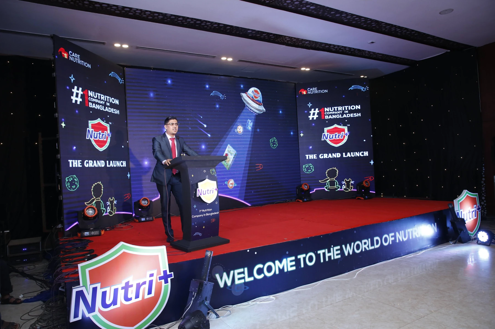
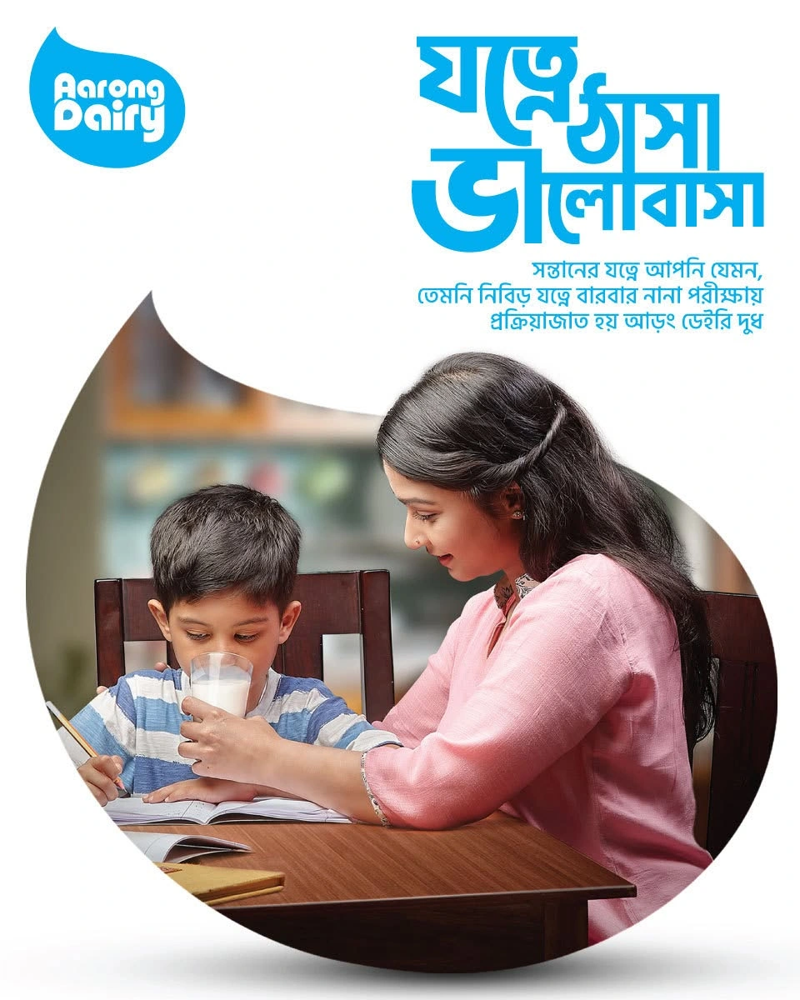
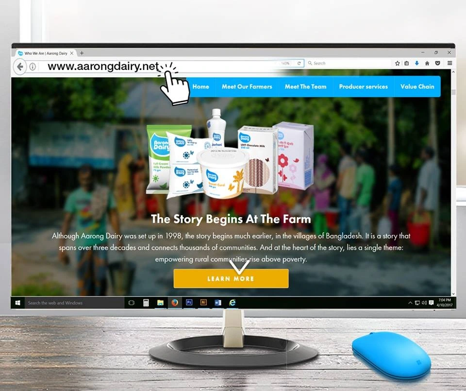
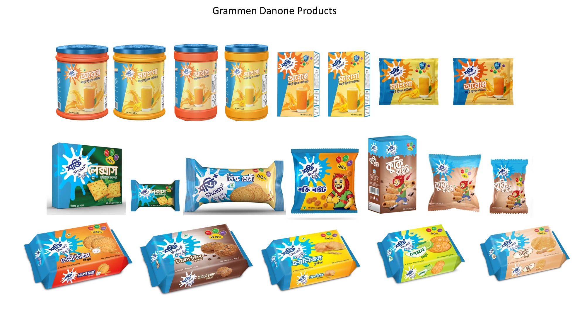

EXPERIENCE ACROSS
MD. NAZMUL HASAN / DHAKA, BANGLADESH
Bringing brands
closer to people.
Brand strategy. Meaningful communication. Commercial execution.
I connect consumer understanding with campaigns, product launches and digital commerce—drawing on my experience across FMCG, dairy, nutrition and customer service.
Grameen Danone Foods Limited
I bring brand thinking and operational depth together, turning ideas into coordinated work across communication, launches and customer experience.
Four organizations.
Explore my career journey ↗YEARS OF WORK EXPERIENCE
14Across brand management, digital marketing, sales operations and customer service.
Explore my career journey ↗PRODUCT LAUNCH COLLECTION
27Supplied packaging variants across Grameen Danone and Care Nutrition.
Explore the products ↗DIGITAL LAUNCHES
03Brand websites, including e-commerce with payment and SMS gateways at Aarong Dairy and Grameen Danone.
View the launches ↗
Launches & events · Explore the experience ↗SELECTED WORK
Ideas with purpose.
Work you can explore.

AARONG DAIRY / CAMPAIGN
Jotne Thasha Valobasha
Care, purity and an emotional connection with families.
Explore case ↗
AARONG DAIRY / DOCUMENTARY
Milk Collection & Chilling Ecosystem
A seven-part series about the people and processes behind dairy.
Watch the series ↗
GRAMEEN DANONE / PRODUCT LAUNCHES
From positioning to launch
Product portfolios, communication and coordinated market launches.
Browse products ↗THE PERSON BEHIND THE WORK
A career shaped by
brands and people.
From customer service at Banglalink to brand and digital marketing at Aarong Dairy and Care Nutrition, my career has grown through understanding people and coordinating practical execution.
Today, I work across brand and sales operations at Grameen Danone Foods Limited.
Get to know me ↗MY CAPABILITIES
From the brand idea
to the market.
01
Campaigns & communication
Brand storytelling, campaign planning and video production coordination.
Explore campaigns ↗02
Brand & product launches
Positioning, go-to-market planning and cross-functional launch execution.
Explore launches ↗03
Digital commerce
Brand websites, e-commerce and connected customer communication.
Explore digital work ↗04
Commercial operations
Sales operations, reporting and coordinated commercial execution.
Explore sales operations ↗BRAND + SALES OPERATIONS
Beyond the campaign.
Into commercial execution.
Nationwide sales operations, dashboards, ROI tracking and coordination across Sales, Factory and Supply Chain.
Explore commercial operations ↗Sales planningCross-functional executionPerformance & ROI tracking
MEDIA / PERSPECTIVES
Thinking aloud
about brand value.
On Green TV’s The Brand Maker, I shared my perspective on real consumer problems and the foundation of sustainable branding.
Watch the interview ↗LET’S CONNECT